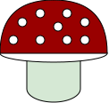

{% extends "secondbase.html" %}

{% block content %}
<main>
    <link rel="stylesheet" href="../static/CSS/style.css">
    
    <div>
        <br>
        <a href="https://www.wildfooduk.com/mushroom-guide/">
         
        </a>
        <br>
        <br>
    </div>
    <div>
        <br>
        <br>
        <h1 id="errormsg">The page you are looking for has gone missing or not been built yet</h1>
        <br>
        <h2 id="errormsg">Please try not to complain about it !!! </h2>
    </div>
</main>
{% endblock content %}  